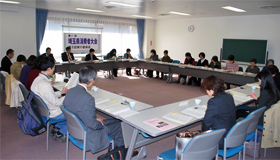

|
|
■議 題 1．報告事項  （1）「第47回埼玉県消費者大会のまとめ」 全体会、分科会、団体別の大会参加者数(記名数)、アンケートによる感想、運営や成果について報告しました。それを基に振り返り、個々の感想・意見等を話しました。
年代も近い芸能人の方から、薄らぐ原爆や原発への思いや戦争体験を生で話して頂く機会はとても大切に感じられました。 ＜第1分科会＞ 食品の放射能汚染等の不安から、参加者が真剣に話を聞いていました。 ＜第2分科会＞ 介護の深刻な部分もユーモアを入れた話やプロジェクターの利用もありでわかりやすかった。 ＜第3分科会＞ 相談事例紹介・寸劇・池本氏の講演と、内容も充実し具体的でした。 ＜第4分科会＞ 大勢の方に事故の経過を理解して欲しい内容でした。専門的な説明もあり良かった。 ＜第5分科会＞ 地域でどう取り組んでいくか、参加者が持ち帰れるものにできました。 （2）｢第48回埼玉県消費者大会｣（案）について 日程・会場・体制を提案し、確認しました。 （3）一次決算報告(見込み)について 事務局より提案し、確認しました。最終決算は幹事会に一任されました。 （4）大会報告集について （5）「県との懇談会について」 （6）平成23年度埼玉県市町村消費者行政ランキングについて |